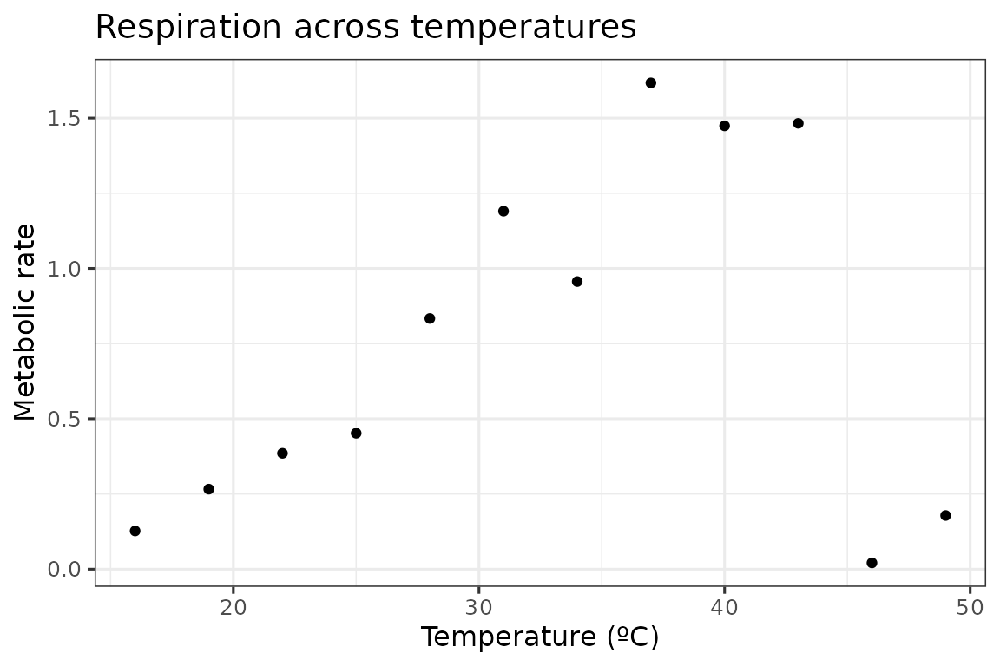

An introduction to rTPC and how it can be used to fit thermal performance curves using nls.multstart.
rTPC provides a suite of functions to help fit thermal performance curves to empirical data. After searching the literature, rTPC contains 48 different model formulations that have been used previously. These functions can be easily applied to methods in R that use non-linear least squares regression to estimate thermal performance curves.
The available model formulations can be accessed using get_model_names().
get_model_names()
#> [1] "analytiskontodimas_2004" "ashrafi1_2018"
#> [3] "ashrafi2_2018" "ashrafi3_2018"
#> [5] "ashrafi4_2018" "ashrafi5_2018"
#> [7] "atkin_2005" "beta_2012"
#> [9] "betatypesimplified_2008" "boatman_2017"
#> [11] "briere1_1999" "briere1simplified_1999"
#> [13] "briere2_1999" "briere2simplified_1999"
#> [15] "briereextended_2021" "briereextendedsimplified_2021"
#> [17] "delong_2017" "deutsch_2008"
#> [19] "eubank_1973" "flextpc_2024"
#> [21] "flinn_1991" "gaussian_1987"
#> [23] "gaussianmodified_2006" "hinshelwood_1947"
#> [25] "janisch1_1925" "janisch2_1925"
#> [27] "joehnk_2008" "johnsonlewin_1946"
#> [29] "kamykowski_1985" "lactin2_1995"
#> [31] "lobry_1991" "oneill_1972"
#> [33] "pawar_2018" "quadratic_2008"
#> [35] "ratkowsky_1983" "rezende_2019"
#> [37] "rosso_1993" "sharpeschoolfull_1981"
#> [39] "sharpeschoolhigh_1981" "sharpeschoollow_1981"
#> [41] "spain_1982" "stinner_1974"
#> [43] "taylorsexton_1972" "thomas_2012"
#> [45] "thomas_2017" "tomlinsonphillips_2015"
#> [47] "warrendreyer_2006" "weibull_1995"They are generally named after the author of the paper (and hence the name of the model within the literature) and the year at which I found the model to be first used, separated by a “_”. Some original model formulations have been altered so that all models take temperature in degrees centigrade and raw rate values as input.
We can demonstrate the fitting procedure by taking a single curve from the example dataset rTPC - a dataset of 60 TPCs of respiration and photosynthesis of the aquatic algae, Chlorella vulgaris. We can plot the data using ggplot2
# load in data
data("chlorella_tpc")
# keep just a single curve
d <- filter(chlorella_tpc, curve_id == 1)
# show the data
ggplot(d, aes(temp, rate)) +
geom_point() +
theme_bw(base_size = 12) +
labs(x = 'Temperature (ºC)',
y = 'Metabolic rate',
title = 'Respiration across temperatures')
For each model, rTPC has helper functions that estimate sensible start values (get_start_vals()), lower (get_lower_lims()) and upper (get_upper_lims()) limits. To demonstrate this, we shall use the sharpe-schoolfield model for high temperature inactivation only.
# choose model
mod = 'sharpschoolhigh_1981'
# get start vals
start_vals <- get_start_vals(d$temp, d$rate, model_name = 'sharpeschoolhigh_1981')
# get limits
low_lims <- get_lower_lims(d$temp, d$rate, model_name = 'sharpeschoolhigh_1981')
upper_lims <- get_upper_lims(d$temp, d$rate, model_name = 'sharpeschoolhigh_1981')
start_vals
#> r_tref e eh th
#> 0.7485827 0.8681437 2.4861344 43.0000000
low_lims
#> r_tref e eh th
#> 0 0 0 1
upper_lims
#> r_tref e eh th
#> 1.616894 10.000000 40.000000 49.000000One problem with most methods of fitting models in R using non-linear least squares regression is that they are sensitive to the choice of starting parameters. This problem also occurs in previous specialist R packages that help fit thermal performance curves, such as devRate and temperatureresponse. These methods can fail entirely or give different parameter estimates between multiple runs of the same code.
To overcome this, we recommend using the R package nls.multstart, which uses minpackLM::nlsLM(), but allows for multiple sets of starting parameters. It iterates through multiple starting values, attempting a fit with each set of start parameters. The best model is then picked using AIC scores.
Using nls_multstart, we will use a
random-search/shotgun approach to fit the curve. Random start parameter
values are picked from a uniform distribution between
start_lower and start_upper for each
parameter. If the best model is not improved upon (in terms of AIC
score) for 100 new start parameter combinations, the function will
return that model fit. This is controlled by convergence_count, if this
is set to FALSE, nls_multstart() will try
and fit all iterations.
# fit model
fit <- nls_multstart(rate~sharpeschoolhigh_1981(temp = temp, r_tref,e,eh,th, tref = 15),
data = d,
iter = 500,
start_lower = start_vals - 10,
start_upper = start_vals + 10,
lower = low_lims,
upper = upper_lims,
supp_errors = 'Y')
fit
#> Nonlinear regression model
#> model: rate ~ sharpeschoolhigh_1981(temp = temp, r_tref, e, eh, th, tref = 15)
#> data: data
#> r_tref e eh th
#> 0.2595 0.5826 14.2031 43.5531
#> residual sum-of-squares: 0.3144
#>
#> Number of iterations to convergence: 21
#> Achieved convergence tolerance: 1.49e-08To calculate additional parameters of interest, we can use
rTPC::calc_params(). This function uses high resolution
predictions of the fitted model to estimate traits associated with a
thermal performance curve. The currently available methods can be viewed
by running ?calc_params. For example, we may be interested
in variation in the optimum temperature, \(T_{opt}\), given that we adapted algae to
different temperatures.
# calculate additional traits
calc_params(fit) %>%
# round for easy viewing
mutate_all(round, 2)
#> rmax topt ctmin ctmax e eh q10 thermal_safety_margin
#> 1 1.81 41.65 2.54 45.56 0.58 11.48 2.06 3.91
#> thermal_tolerance breadth skewness
#> 1 43.02 5.37 -10.9Finally for this introduction, we can get predictions of our model using broom::augment(), which is similar to predict(). These are then plotted over our original data.
# predict new data
new_data <- data.frame(temp = seq(min(d$temp), max(d$temp), 0.5))
preds <- augment(fit, newdata = new_data)
# plot data and model fit
ggplot(d, aes(temp, rate)) +
geom_point() +
geom_line(aes(temp, .fitted), preds, col = 'blue') +
theme_bw(base_size = 12) +
labs(x = 'Temperature (ºC)',
y = 'Metabolic rate',
title = 'Respiration across temperatures')